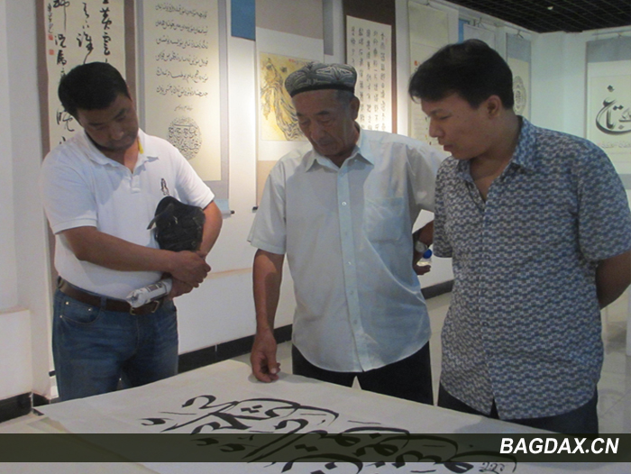

بىرىتانىيەگە ساياھەت
ھەر بىر ئادەمدە ئوخشىمىغان ئارزولار ۋە ئىنتىلىشلەر بولىدۇ.. دېھقاننىڭ ئىنتىلىدىغنى باشقا، ئۇقۇغۇچىنىڭ باشقا بولىدۇ. ئىنسانلار ئوخشىمىغان ئارزو-ئارمانلار بىلەن ياشايدۇ. شۇنداق،مېنىڭمۇ ئۇقۇغۇچى بولۇش سالاھىتىم بىلەن كۆزلىگەن مەقسەتلىرىم ئايرىم بولىدۇ.
لوندون، ئوكىسفورد، كەمبىرىج دىيىلسە، نۇرغۇن ئوقۇغۇچىلار دۇنيادىكى داڭلىق مەكتەپلەرنىڭ ئېسىگە ئالىدۇ ھەمدەئاشۇ مەكتەپلەردە ئوقۇشنى ئارزۇ قىلىدۇ. ماڭا ئوخشاش ئوقۇشخۇمار ئادەمدە، بۇ ئارزوبەك كۈچلۈك ئىدى. پۇرسەت بولسا، مۇشۇ ئۇنىۋېرسىتلارنى، مۇشۇ دۇنياغا زور تەسىرلەرنى كۆرسەتكەن جايلارنى ساياھەت قىلىش ئارزويۇم بار ئىدى. گەرچەياۋرۇپادىكى فرانسىيە، گىرمانىيە، گوللاندىيە ۋە باشقا جايلارنى ساياھەت قىلىپ بولغان بولساممۇ، لېكىن ۋىزا چەكلىمىسى تۈپەيلى، ئەنگىلىيەنى ساياھەت قىلالمىغان ئىدىم.
ئەنگىلىيەدىكى دۇرھام ئۇنىۋېرسىتى ھەر يىلدا بىر قېتىم ئىسلام مالىيىسى توغۇرلۇق يازلىق لاگىر پىروگراممىسى ئۆتكۈزۈپ تۇراتتى. مەنمۇ مۇشۇ ساھەدىكى ئوقۇغۇچى بولۇش سالاھىتىم بىلەن مۇشۇ ئۇنىۋېرسىتنىڭ مۇشۇ پىروگراممىسىغائىلتىماس قىلدىم. ئۇنىۋېرسىتنىڭ تاللىشى بىلەن، مەنمۇ دۇرھام ئۇنىۋېرسىتى ئىسلام مالىيىسى يازلىق لاگىر پىروگراممىسىنىڭ كاندىداتلىقىغا تاللاندىم.
لېكىن ئەڭ مۇھىم مەسىلە،ۋىزا مەسىلىسى ئىدى. ئەنگىلىيەگە ۋىزا ئېلىش ئەڭ تەس دۆلەتلەرنىڭ بىر ئىدى. ۋىزا بەمىسە، پاسپورتقا قارا تامغا ئۇرىۋېتىدۇ. ئافرىقىلىق بىر ساۋاقدىشىم، تاللانغان بولسىمۇ لېكىن مەقسىتىڭ كۆچمەن بولۇپ كېتىش دەپ ۋىزا بەرمەي، قارا تامغا ئۇرۋەتتى. قېنى، مەن بېشىمغا كەلگەننى كۆرەرمەن؟ مەكتەپنىڭ چاقىرىقىنى تاپشۇرۇپ ئېلىپلا، بارلىق كېرەكلىك ماتىرياللارنى بىر كۈندىلا تەييارلاپ بولۇپ، ئىلتىماسنى سۇنىۋەتتىم. يۈرەكلىرىم پوك-پوك، 2 ھەپتە ئۆتۈپ كەتتى،ھىچقانداق خەۋەر يوق. 3 ھەپتە بولغاندا، پاسپورتىنڭنى ئېلىپ كەتكىن دەپ ئۇچۇركەلدى. ئەلچىخانىغا قانداق باردىم بىلمەيمەن، كونۋېرتنى ئاچتىم. ئەلھەمدۇلىللاھ،ئۇلار ماڭا 6 ئايلىق كۆپ قېتىملىق ۋىزا قويۇپ بەرگەن ئىدى. ئەلچىخانا ماڭا ئىشەنگەن ئىدى.
ئەمدى ئەنگىلىيەگە مېڭىشنىڭ تەييارلىق خىزمەتلىرىنى باشلىۋەتتىم. بۇ خوشاللىقىمنى ئاشۇ سەھرادىكى ئاتام بىلەن ئورتاقلاشتىم. ئويلىمىغان يەردىن دېھقان ئاتام ماڭا تېخىمۇ زور مەدەتبەردى:"بالام، پۇل بولسىلا ھەممە ئىشنى قىلغىلى بولمايدۇ. ھەر پۇلى بارئادەملەرمۇ شارائىت تۈپەيلى بارىمەن دەپ بارالمايدۇ. پۇل دىگەننى تېپىۋالغىلى بولىدۇ، بېرىپ كېلىڭ ئوغلۇم".
مۇشۇ قوللاشلار ۋە ئىلھاملار تۈپەيلى، دۇرھام ئۇنىۋېرسىتىنىڭ بىر ھەپتىلىك ئىسلام مالىيىسى يازلىق لاگىر پىروگراممىسغا قاتنىشىش ئۈچۈن، يولغا چىقتىم. كۇلالۇمپۇر ئايدۇرومىدا چىگرا ئوفىسسورى پاسپورتلارنى تەكشۈرەشكە باشلىدى. ماڭا كەلگەندە، جوڭگو پاسپورتىنى كۆرۈپ (ئالاھىدە قارايدىغانلىقىنى ئاللىقاچان پەملەپ بولغان، لېكىن مەن ئىدىيەجەھەتتە تەييارلىق قىلىپ بولغان):
- ئەپەندىم سېتى (ئادەتتەدادىسىنىڭ ئىسمى بىلەن چاقىرىدۇ) ، قانداق ئەھۋالىڭىز؟
- ئەلھەمدۇلىللاھ ئەپەندىم
- ھە(ھەيرانلىق بىلەن)،سىز مۇسۇلمانمۇ؟
- شۇنداق مەن مۇسۇلمان.
- مالاي تىلى بىلەمسىز؟
- ھەئە بىلىمەن،
- (مالايچەگەپ قىلىپ كەتتى).. مالايسىياغا كەلگىلى قانچە ئۇزاق بولدى؟ نىمە ئىش قىلىسىز؟
- بەش يىل بولدى،دوكتورلىقتا ئوقۇۋاتىمەن.
- قاچان قايتىپ كېلىسىز؟
- ئاللاھ خالىسا، 2ھەپتىدىن كېيىن.
- رەھمەت ئەپەندىم، ساياھىتىڭىزخەيرلىك بولغاي
- سىزگىمۇ رەھمەت..
مۇشۇ مالايچە سۆھبەتتىن كېيىن لوندونغا ئۇچىدىغان ئايرۇپىلاندا بولدۇم. 13-14 سائەتلىك زېرىكىشلىك سەپەردىن كېيىن مەن تەشنا بولغان لوندون ئايدۇرومىدا بولدۇم. بۇ كۇن ماڭا ئەڭ ئۇزۇن بىر سەپەر ۋە ئەڭ ئۇزۇن بىر كۈن بولدى. بۇ ھاياتىمدىكى ئەڭ ئۇزۇن كۈندۈز كۆرگەن ( 22 سائەت) بىر كۈن بولدى. يەنە بىر باشقىلاردىن ئۇزۇنراق بولغان بىر سۆھبەتنىڭ مېنى كۈتىۋاتقانلىقنى بىلىپ تۇرۋاتىمەن. چىگرا ئىشخانىسىغا يېققىنلاشقان ۋاقتىمىزدا بىر ئىشقا مەنلا ئەمەس، باشقىلارمۇ ھەيران قالدى.. نەچچە يۈز ساياھاتچىگە ئاران 2 چىگرا ئوفىسسورى مۇلازىمەت قىلىۋاتاتتى. سەئۇدى ئەرابىستاندا بولغان زىيارىتىمدىمۇ بۇنداق ئەھۋالغا دۇچ كەلمىگەن ئىدىم. ئۇلارنىڭ مۇلازىمىتى شۇنداق ئاستا ۋە شۇنداق ئەستايىدىل ئىدى. بىر 4 كۆزلۈك ئوفىسسور بىرئايالنى تۇتىۋېلىپ شۇنداق ئۇزاق سۇئال سوراشقا باشلىدى. ھەممىمىز پىچىرلاشقا باشلىدۇق. مۇشۇنداقمۇ مۇلازىمەت قىلغان بارمۇ، بولۇپمۇ ئەنگىلىيەدەك بىر دۆلەتتە. ساقىلى بارلار، 3- دۆلەت ئەللىرىنىڭ پاسپورتى بارلار كۆپرەك تەكشۈرلىۋاتاتتى. ماڭىمۇنۆۋەت ئاز قالدى. 4 كۆزلۈك ئوفىسسورغا دۇچ كېلىپ قالمىغىيدىم دەپ قەلبىمدە ئىلتىجاقىلىپ تۇردۇم. ماڭا كېلەي دىگەندە 3- بىر ئوفىسسور كېلىپ قالدى.
- نىمىگە كەلدىڭىز؟
- دۇرھام ئۇنىۋېرسىتىنىڭ بىرھەپتىلىك ئىسلام مالىيىسى يازلىق لاگىر پىروگراممىسغا قاتنىشىش ئۈچۈن كەلدىم.
- چاقىرىق بارمۇ؟ كۆرۈپ باقاي
- ئەلۋەتتە بولىدۇ.
- بۇرۇن ئەنگىلىيەگە كېلىپ باققانمۇ؟
- ياق، تۇنجى قېتىم، بىراق ياۋرۇپادىكى باشقا دۆلەتلەرگە بېرىپ باققان.
- بولىدۇ ئەپەندىم، لوندونغا كەلگىنىڭىزنى قارشى ئالىمىز.
- رەھمەت ئەپەندىم..
لوندونغا كەلگىنىڭىزنى قارشى ئالىمىز دىگەن سۆزى مېنى ھاياجانغا سالدى. چۈنكى بۇ مېنىڭ كىشىلىك قەدر-قىممىتىنىڭ ھۆرمەت قىلىنىشى ئىدى.
مانا شۇنداق قىلىپ مەن بىرتانىيە زېمىنىغا دەسسىدىم. بىر يېرىم سائەتلىك ئابتوبۇس سەپىرى بىلەن لوندونغا كەلدىم. بۇرۇن مالايسىيادا ئۇقۇغان، ھازىر لوندوندىكى مەلۇم بىر ئۇنىۋېرسىتتا ئەلا نەتىجىلەر بىلەن ئوقۇۋاتقان بىر بالا مېنى كۈتىۋالدى. دۇرھام ئۇنىۋېرسىتى لوندوندىن يەنە ئابتوبۇس بىلەن 7 سائەتلىك يول ئىدى ( ئوقۇغۇچى ئەمەسمۇ،ئابتوبۇسنى تاللىدىم). لوندوننى زىيارەت قىلمايلا، ئەتىسى ئەتتىگەندە، دۇرھامغا قاراپ يولغا چىقتىم.
3 سائەتلىك زېرىكىشلىك سەپەردىن كېيىن بىر يەردەئازراق دەم ئېلىش ئۈچۈن توختىدى. ئابتوبۇس كۈتۈش زالىدا، بىر مۇسۇلمان بالىنى ئۇچراتتىم. لېكىن گەپ قىلىشمىدۇق. ئابتوبۇسقا چىقىپ ئولتۇرسام، ھېلىقى بالىمۇچىقىپ كەلدى. مەن دەرھاللا يېنىمدىن جاي كۆرسەتتىم ۋە سالام يوللىدىم. ئۇمۇھەيرانلىق بىلەن ماڭا سالام قايتۇردى. شۇنىڭ بىلەن بىر مەنىلىك سەپەر باشلاندى.سۆھبىتىمىزدىن كېيىن، ئۇ بالىنىڭ بېنگاللىق بالا ئىكەنلىكى، مەن بىلەن تەڭ دىمەتلىك ئىكەنلىكى، قوش ئاسپىرانىتلىقنى ئوقۇپ تۈگەتكەنلىكى، ھازىر بولسا مانچىستىر ئۇنىۋېرسىتىدا ئوقۇش مۇكاپات پۇلى بىلەن دوكتورلۇق ئۇقۇۋاتقانلىقىدىن خەۋەردار بولدۇم. ئايالىمۇ ئوخشاش بىر ئۇنىۋېرسىتتا دوكتورلۇق ئوقۇۋېتىپتۇ. تۇرمۇشتىكى غايىلىرىمىز ۋە پىكىرلىرىمىز بىريەردىن چىقتى. ئۇمۇ ماڭا ئوخشاش ئائىلىسى ئانچە باياشات بولمىغان بىر ئائىلىدىن كېلىپ چىققانلىقى سۆزلەپ بەردى. پۇلغا ھىرىسمەن ئەمەسلىكى، تۇرمۇشىنىڭ ئاددى-ساددا ئەمما مەنىلىق ئۆتسىلا بولىدىغانلىقىنى ئۈمۈد قىلىدىكەن.
ياشاشنىڭ پەقەت قۇرساق ئۈچۈنلا ئەمەسلىكىنى، ئامال بولسا، ئۆز دۆلىتى، ئۆز خەلقى ئۈچۈن ئازراق بولسىمۇ بىرەر ئىش قىلىپ بېرىشنى ئۈمۈد قىلىدىغانلىقى، لېكىن بۇنىڭغا دۆلىتىكى چېرىكچىلىك ۋە پارىخورلىقنىڭ يول قويمايدىغانلىقىنى شەرھلەپ ئۆتتى...
ئويلاپ قالدىم، نىمىشقا بىزدە ئوقۇش قىزغنىلىقى كەمچىل؟ ئالىي مەكتەپنى پۈتتۈرۈپلا، مۇقىم، مۇئاشلىق بىرخىزمەت تېپىشنى ئويلايمىز.. ئىشقىلىپ مۇقىم خىزمەت ئورنى چىقسىلا داۋاملىق ئىلگىرلەپ ئوقۇشتىن توختاپ قالىمىز. مانا بۇنىڭغا ئوخشاش بىزدىن نامرات بىردۆلەتتىن كەلگەن ئوقۇغۇچى بىلىم ئۈچۈن، ئۆز يۇرتىدا تولۇق كۇرس ۋە ماگىستىرلىقنى تاماملىغاندىن كېيىن، يەنە ئەنگىلىيەدىكى مانچىستىر ئۇنىۋېرسىتىدا ماگىستىرلىق ئوقۇشنى تاماملاپ بولۇپ، ھازىر دوكتورلۇق ئوقۇۋېتىپتۇ. مەن بۇنىڭغا ئوخشاش بىنگاللىقلانى جىق ئۇچراتتىم. ھەقىقەتەن بىلىم ئۈچۈن ئىشتىياق باغلايدىكەن. قۇرساق ئۈچۈن ئەمەس، ئومومى ساپا ئۈچۈن، بىلىم ئىگەللەشنىمۇ بىر خىل ئىبادەت دەپ ئولتۇرۇپ ئوقۇيدىكەن. توغرا، ئەگەر بىزمۇ قورساق ئۈچۈنلا ئوقۇساق، پارازىت قۇرۇتتىن نىمە پەرقىمىز قالىدۇ؟ خۇسوسەن مەنمۇ قۇرساق ئۈچۈنلام ياشىغان بولسام، ئوقۇمايلا، ئاتامنىڭ قوينى باقاتتىم. قۇرساق ئۈچۈن ياشىغان بولسام،تەكلىماكان قۇملىقلىرىدىمۇ ئاچ قالماس ئىدىم. قۇرساق ئۈچۈن ياشىغان بولسام،ئاتا-ئانامغا ھەمراھ بولۇپ، كەتمەن چاپقان بولساممۇ، ئاچ قالمايتتىم.دىمەكچىمەنكى، ئوقۇشىمىز قۇرساق ئۈچۈنلا بولۇپ قالمىسۇن.... قۇرساق ئۈچۈنلاياشاشتىن ئىبارەت تۇرمۇش رامكىسىدىن چىقىپ كېتەيلى. پايدىلىق ئىلىم ئۈچۈن، ئومومى ساپايىمىز ئۈچۈن تىرىشايلى... دۇرھامغا يېتىپ كېلىش
7 سائەتلىك يول يۈرۈپ،ئەڭ ئاخىرى دۇرھامغا يېتىپ كەلدىم. كىچىك بىر دۇنيا، كىچىك بىر شەھەر، پاكار-پاكارقەدىمىي تۈسنى ئالغان بىنالار. قېنى دۇرھام ئۇنىۋېرسىتىنىڭ دەرۋازىسى؟ دەرۋازەيوق، بىر شەھەر- بىر مەدەنىيەت؛ بىر شەھەر-بىر ئۇنىۋېرسىت؛ نوپوسى 30 مىڭغىمۇيەتمەيدىغان (يېرىمىدىن كۆپرەكى ئوقۇغۇچى)، كۆلىمى جەھەتتە بىزنىڭ يېزىغىمۇيەتمەيدىغان كىچىك بىر شەھەر، ئەنگىلىيە بويىچە ئالدىنقى 5 ئۇنىۋېرسىت ئىچىدىكى بىر ئۇنىۋېرسىتتنى شەكىللەندۈرۈپتۇ. بۇنىڭ مەخپىيىتى زادى نەدىمۇ؟ نىمىسىگە تايىنىپ شۇنداق مۇۋاقىپىيەتلەرنى يارىتالىدى؟ ئوكىسفوردتىكى ساياھىتىمدە تەپسىلى چۈشەندۈرىمەن. 
بۇ بىر ھەپتىلىك ئىسلام مالىيىسى پروگراممىسى ئۈچۈن ئامرىكىدىن تارتىپ ئافرىقىغىچە، ياۋرۇپادىن تارتىپ ئاسىياغىچە بولغان دۇنيانىڭ بارلىق دۆلەتلىرىدىن بولغان بانكىرلار، پروفىسسورلار، ئوقۇتقۇچى-ئوقۇغۇچىلار،ھەم بۇ ساھەگە قىزىققۇچى مۇسۇلمان ۋە مۇسۇلمان ئەمەسلەر يىغىلغانىدى. مەنمۇ بىردىنبىر جوڭگولۇق ئۇيغۇر بولۇش ساياھىتىم بىلەن قاتناشقانىدىم. جوڭگونىڭ غەربىدىن كەلگەن بىر ئاز سانلىق مىللەت ئىكەنلىكىمنى بىلدۇردىم. نۇرغۇن ئادەملەر بىلەن تونۇشتۇم. بۇ بىر ھەپتە جەريانىدا ئىسلام بانكىسى، ئىسلام سۇغىرتىسى ۋە ئىسلام پايچېكى توغرىسىدىكى مۇھاكىمىلەر ۋە باياناتلار ئېلىپ بېرىلدى. ئامىرىكىدىكى ئىقتىسادى كىرزس تۈپەيلى، نۇرغۇن دۆلەتلەر بۇ خىل ئىقتىساد تۈزۈمىگە قىزىققانىدى.

مۇشۇ كۈنلەردە، مۇشۇئۇنىۋېرسىتنىڭ كۇتۇبخانىسىدا ئىشلەيدىغان بىر ئۇيغۇر ئاكاش مېنىڭ ئۆيىگەچاقىرۋالدى. يات بىر يۇرتتا، ئوخشاش بىر خىل تىل، ئوخشاش بىر خىل مەدەنىيەت ۋە ئوخشاش بىر خىل تاماق. بۇ ئاكاشنىڭ ئىككى قىزى بولۇپمۇ بەك خوشال بولدى. ئۇلارنىڭ ئەركىلەشلىرىدىن ئۇلارنىڭ ئۇيغۇرلارغا بولغان بىر خىل سېغىنىش چىقىپ تۇراتتى. لېكىن ئۇلار ئۇيغۇرچىنى ئانچە ئۇقمايدىكەن. بۇ ئىش مېنى ئۆرتىندۈردى. 2 ئۇيغۇردىن ئاپىرىدە بولغان بىر جۈپ ئۇيغۇر قىزى ئۇيغۇرچە سۆزلىيەلمىسە، ئۇلانىڭ پەرزەنىتلىرىنىڭ ئۇيغۇر تىلىدا سۆزلىشى مۇمكىمۇ؟ شۇنىڭ بىلەن 3 – ئەۋلادقا بارمايلا،ئۇيغۇر تىلى بىر خىل ياد تىل بولۇپ قالارمۇ؟
مەنمۇ دىققەت قىلاي،مېنىڭ قىزىممۇ يات بىر مۇھىتتا، يات بىر تىل مۇھىتىدا چوڭ بولىۋاتىدۇ. ئاز تولايات تىللارنى ئارلاشتۇرۇپ سۆزلەۋەتىدۇ، شۇڭا يەسلىدىنمۇ توختىتىپ قالدىم. نەۋرەم مېنىڭ مىللى كىملىكىمنى، دىننى ئىتىقادىمنى تونۇماي قالمىسۇن... نەۋرەم تارىمدىن ئىبارەت بۇ بۈيۈك زېمىننى ئۇنتۇپ قالمىسۇن!!!
بۇ بەش كۈن داۋام قىلغان دەرس ئاخىرلىشىپ، دىپلوملار تارقىتىلدى. بۇ شەھەر شوتلاندىيەگە يېققىن بولغاچقا،بۇ دۆلەتتىكى بىر ئۇكاشنىڭ ( بۇرۇن مالايسىيادا ئوقۇغان) تەكلىپى بىلەن بۇ دۆلەتكەسەپەرگە چىقتىم.
شوتلاندىيەگە سەپەر
بۇ 3 سائەتلىك پويىز سەپىرىمدە، مۇشۇ يىغىن ئۈچۈن كەلگەن ئەرەب ئوقۇغۇچىلار بىلەن بىللە بولۇپ قالدىم. شوتلاندىيەنىڭ گلاسگوۋ دىگەن شەھىرىدە ئوقۇيدىكەن. دۆلىتىنىڭ قوللىشى بىلەن ئوقۇش مۇكاپات پۇلىغا ئېرىشىپ تولۇق كۇرس ئوقۇۋېتىپتۇ. دۆلىتى يىلدا تۈركۈم-تۈركۈملەپ ئوقۇغۇچىلەرنى دۇنيانىڭ ھەرقايسى جايلىرىدا ئوقۇتىۋېتىپتۇ. ئىقتىسادتىن غەم يىمەي خاتىرجەم ئوقۇيالايدىكەن. قايتىپ بارسا، دۆلىتى ئەتىۋارلاپ ئىشلىتىدىكەن.
لېكىن مەنچۇ؟ ئوقاي دىسەم، ئىقتىساد بېسىمى، ئىشلەي دىسەم ئوقۇش بېسىمى...... ياق، ياق، ھەرگىزئۈمىدسىزلەنمە،، ئۈمىدسىزلىك شەيتاننىڭ ئىشى . مەنمۇ ئاشۇ بېنگاللىققا ئوخشاش پۇرسەتنى ئۆزەم يارىتىمەن. توغرا ئىلىم ئۈچۈن تىرىشساقلا،بىزنى ياراتقۇچى بىزگە ياردەم قىلىدۇ. قايغۇدىن كېيىن ئاڭلىغان مۇزىكا مۇڭلۇق بولىدۇ،
كۆز يېشىدىن چىلىنىپ چىققان كۈلكە شېرىن بولىدۇ.
تېڭىرقاشتىن چىققان روھ سەگەك بولىدۇ،
يالغۇزلىقتىن قۇتۇلغان قەلىب كۆتۈرەڭگۈ بولىدۇ.
(دوستۇم خاتىرىسىدىن) مانا بۇ تۇرمۇش، مانا بۇھاياتنىڭ بىر تەركىبى قىسمى. مۇشۇ سۆھبەتلەر ۋە ئويلىنىشلار ئىلكىدە، پويىز شوتلاندىيەنىڭ گلاسگوۋشەھىرىگە كېلىپ توختىدى. مېنى تەكلىپ قىلغان ئۇكىمىز ئىشلەۋاتقان بولغاچ، ئازراق كېچىكىپ كەلدى. بۇ ئۇكىمىز كەلگۈچە بۇ ئەرەبلەر بىلەن بىررېستوراننىڭ ئالدىدا ساقلاپ تۇردۇم. ئەرب ئوقۇغۇچىلار نىمە يەيسەن دەپ سورىدى. مەن ياق قورسىقىم توق دەپ تۇرىۋالدىم. ئۇلار بېرىپلا ھالال بەلگىسى بولمىغان بىر رېستوراندىن توخو ھامبۇرگى ئېلىپ كېلىپ يېيىشكە باشلىدى. مەن ھەيران قالدىم ۋە سوراپ بىلمەكچى بولدۇم: - بىر گەپ قىلسام، قەتئىي ئاچچىقىڭلار كەلمىسۇن، بۇ توخو گۆشى ھالالمۇ؟
- ياق، ھالال ئەمەس، لېكىن يىسەك بولىدۇ، ئاچ قېلىپ ئامال بولمىغاندا. توۋادەۋەتتىم ئىچىمدە، لېكىن زىيادە گەپ قىلمىدىم. بىز ئاچ قېلىپ ئۆلەي دەپ قالمىدۇق. ئۇلارغۇ بۇ دۆلەتتە ياشايدۇ، نەدە ھالال تاماق بارلىقىنى ئوبدان بىلىدۇ. بىز ئۇيغۇر مۇسۇلمانلىرى بولغان بولساق، ئىش دەل ئەكسىچە بولاتتى.. بىر مەھەلدىن كېيىن بۇ ئۇكىمىز مېنى كۈتىۋېلىش ئۈچۈن كەلدى ۋە بىز قىزغىن كۆرۈشكەندىن كېيىن مېنى ياتىقىغا باشلاپ باردى. بېشىدىن ئۆتكەن ئىشلارنى سۆزلەپ بەردى. ئۇنىڭدىكى تەۋەككۈلچىلىك روھى، ئۇيغۇرلارغاخاس جاسارىتى، جاپاغا چىدايدىغان روھى ۋە مېھماندوسلىقى مېنى تەسىرلەندۈردى. باشقا ھەر قانداق بىر مىللەت تەڭ يىگەن تامىقىنىڭ پۇلىنىمۇ تەڭ تۆلەيدۇ. لېكىن بىز ئۇيغۇرلارنىڭ ئادەمگەرچىلىكىگە ۋە مېھمىنىنى ئەڭ ئەزىز كۆرىدىغانلىقىنغا ھەر قانداق بىر مىللەت يېتەلمەيدۇ. بۇ ئۇكىمىز كىچىك بولسىمۇ لېكىن مېنى ناھايىتى ياخشىكۈتىۋالدى ، مەن ئۇنىڭغا ھەقىقەتەن ئادەمگەرچىلىك قەرزى بولۇپ قالدىم.
ئۇماڭا غەرب مەدەنىيىتىدىن سەسكەنگەنلىكى سۆزلەپ بەردى. يەرلىكلەرنىڭ پەقەت ھاراق ۋە ساياھەتتىن ئىبارەت ئىككى خوشاللىقى بارلىقىنى، ئۇلاردا باشقاخوشاللىق يوقلىقىنى دەپ بەردى. بىر قاتار سۆھبەتلاردىن كېيىن يەنە بىرمەنىلىك كۈننى كۈتىۋالدۇق.
ئەتىسى ئەتتىگەندە گلاسگوۋغا ساياھەت باشلاندى. ئوخشاش قەدىمىي بىنالار، بىر شەھەر ئىگىز ئىمارەتلىرى بىلەن ئەمەس، بەلكى قەدىمىيلىكى بىلەن گۈزەللىكىنى ھىس قىلدىم. مەيلى پارىژبولسۇن، مەيلى لوندون بولسۇن، مەيلى دۇرھام بولسۇن، يا مەيلى گلاسگوۋ بولسۇن ھەممىسى بىر مەدەنىيەت ئۈستىگە يەنە كېلىپ دەريا مەدىنىيىتى ئاساسىغا قۇرۇلغان ئىدى. " قەيەردە سۇ بولسا، شۇ يەردە ھاياتلىق" دىگەن كەلىمىلەرنى قايتا –قايتا ئەسلىدىم. مۇشۇ شەھەرلەرنىڭ ھەممىسى دەريابويىنى بويلاپ تەرەققى قىلغان ئىدى. بىر دەريا- بىر مەدەنىيەت، بىر دەريا– بىر شەھە ر, بىر دەريا – بىر ھاياتلىق. 
گلاسگوۋ ئۇنىۋېرسىتىدا زىيارەتتە بولدۇق.ئۇنىۋېرسىتلارنىڭ قەدىمىيلىكى ۋە ئۆزىگە خاس ئۇسلۇبتا سېلىنغان بىنالارمېنى ھەيران قالدۇردى. ھەقىقەتەنمۇ مائارىپ ئۈچۈن زور كۈچ چىغارغانلىقىنى ھىس قىلدىم. ئۇكىمىزنىڭ مۇشۇ مەكتەپتە ئوقۇغۇسى بارلىقىنى ۋە شۇنىڭ ئۈچۈن تىرىشۋاتقانلىقىنى ئېيتتى. شۇنداق بىز ئوقۇشىمىز كېرەك- مېغىزىنى قوبۇل قىلىپ شاكىلىنى چىقىرۋېتىش پوزىتسىيىسى بويىچە ئۇقۇشىمىز كېرەك. خەق ئوقۇغان مەكتەپتە بىزمۇ ئوقۇيالايمىز.
دەريا بويىدا شۇنداق چىرايلىق بىر كۆمۈش رەڭلىك گۈمبەز پارقىراپ تۇراتتى. مۇسۇلمان دۆلىتى بولغان بولسا،قىلچە ئىككىلەنمەيلا مەسجىد دىگەن بولاتتىم. راستىنى دېسەم، مەن ئۇنىمەسجىد دەپ ئويلىماپتىمەن. ئۇنىڭ مەسجىد ئىكەنلىكىنى ئۇكىمىزدىن ئۇقتۇم.شۇنداق بىر چىرايلىق مەسجدنىڭ دەريا بوينىدىن ئورۇن بېرىلگىنىگە مىڭلاپ رەھمەتلەر ئېيتتىم. مانا بۇ ئىسلامنىڭ غەرپتىكى بىر پارچىسى ئىدى.
شوتلاندىيەدىكى2 – كۈنىمدە شوتلاندىيەنىڭ مەركىزى ئېدىنبۇرگقا يولغا چىقتۇق. 2 سائەتلىك سەپەردىن كېيىن ئېدىنبۇرگقا يېتىپكەلدۇق. ئەتراپيېششىللىق بىلەن پۈركەنگەن، بۇ مەنزىرىلەر مەن تۇغۇلۇپ ئۆسكەن جاي بىلەن دەل ئەكسىچە ئىدى. ناھايىتى گۈزەل مەنزىرە- تاغلار بىلەن بىنالار گىرەلەشكەن،قەدىمىيلىك يەنە بىر قېتىم ئۆزىنىڭ گۈزەللىكىنى نامايان قىلغان ئىدى. بۇشەھەرنى دۇنيادىكى ئەڭ گۈزەل شەھەردەك ھىس قىلدىم. پارىژمۇ ھەتتا لوندونمۇيەتمەيدىغاندەك ھىس قىلدىم.
2 كۈنلۈك ساياھىتىمنى ئاخىرلاشتۇرۇپ، لوندونغا يولغا چىقتىم.
لوندونغا سەپەر
مانا ئەمدىلىكتە لوندوننى ساياھەت قىلىش ئۈچۈن كىچىچەيول يۈرۈپ، كىشىلەر تەرىپىدىن تەرىپلىنىۋاتقان بۇ شەھەرگە قايتىپ كەلدىم. يەنەھېلىقى مېنى كۈتىۋلغان دوستىمنىكىگە چۈشتۈم. بۇ دوستۇممۇ مېنى دەپ بىر ھەپتەۋاقتىنى ماڭا ئاتىۋەتكەن ئىدى. يەنە بىر قېتىم ئۇيغۇر ئەنئەنىسىگە –مېھماندونستلىقىمىزغا رەھمەت.
مانا لوندون- تاملىرى ئالتۇن ئەمەسكەن، كوچىلىرىمۇ بىزدىن ئانچە پەرىقلىنىپ كەتمەيدىغان ئادەملەر بىلەن لىق تولغان، ئاسمىنىدىنمۇ رەڭلىك قار ياغمايدىكەن. لېكىن يەنىلا بىر خىل ئوسلۇب، بىر خىل مەدەنىيەت – ئۇ بولسىمۇ بىناكارلىق مەدەنىيىتى، دەريا مەدەنىيىتى ۋە چىركاۋ مەدەنىيىتى. شەھەر مەدەنىيىتىگە رەڭ قوشىۋاتقان نەرسىلەرمانا مۇشۇلار ئىدى. يەنە شۇ دەريا بۇ شەھەرنىڭ بارلىق گۈزەللىكىنى ئۆزىگەمۇجەسسەملەشتۈرگەن ئىدى. بۇ دەرياغا قانچىلىك بولغاندۇ؟ قانچىلىغان دەۋرلەرنى بېشىدىن كەچۈرگەندۇ؟ نىمىشقا سۈيى تۈگەپ كەتمەيدىغاندۇ؟ دەل مۇشۇ پەيتتە، ئانادىيارىمدىكى قۇرۇپ قاخشال بولغان توغراقلىقلارنى، زېمىندا سۇسىراپ كەتكەن يانتاقلىقلارنى ئەسلىدىم. نىمشقا مۇنۇ لوندوننىڭ دەرياسى قۇرۇپ كەتمەيدۇ؟ نىمىشقابىزنىڭ ئانا تارىم دەريا قۇرۇپ كېتىدۇ؟ ھەي" سۇ بار يەرنىڭ ئوتى يوق، ئوتى بار يەرنىڭ سۇيى يوق" دەپ ئۆزەمنى بازلىدىم.
مۇشۇ ئەرزىمەس خىياللار بىلەن لوندوننىڭ داڭلىق مەيدانلىرىنى، چىركاۋ ئەتىراپلىرىنى، "ۋەستىمىنىستىر" دەيدىغان بىناكارلىقلىرىنى ۋە لوندون كۆۋرىكىنى ئايلىنپ بولدۇم. مېڭىپمۇ چارچاپ قالدىم. ئەمدى تاماق يەيدىغان ۋاقىتمۇ كېلىپ قالدى. بۇ دوستۇم مېنىڭ ھۆرمىتىمنى دەپ ياخشى بىرئاشخانىغا كەچلىك تاماق ئورۇنلاشتۇرغان ئىدى ھەمدە بىر نەچچە ئۇنىۋېرسىتتا ئوقۇيدىغان دوستلىرىمۇ تەكلىپ قىلغان ئىدى.
مېنىڭ بۇ تىلغان ئېلىۋاتقان دوستۇم بۇرۇن مالايسىيادىمۇياخشى ئوقۇغان ئىدى. "ئالتۇن ھامىنى ئالتۇن" بولىدىكەن. مانا قىسقا 3يىل ئىچىدە تولۇق كۇرسنى تاماملايلا دەپ قاپتۇ. تاماملىغان تەقدىرمۇ ناھايىتى ياخشى نەتىجىلەر بىلەن تاماملايدىكەن. ئەگەر ئىقتىسادى بېسىم بولمىغان بولسا، يەنە نىمە كارامەتلەتنى كۆرەتتۇقكىن تاڭ. 
بۇ بالىلار ئىچىدە ماڭا يەنە بىر ياخشى تەسىر بەرگىنى بولسا، بىر ئۇكا دىمەتلىك بالا ئىدى. كەلگىنىگە بىر يىل بولمىغان ۋاقىت ئىچىدە،تەييارلىق سىنىپى بويىچە 60 نەچچە بالا ئىچىدە ئالدىنقى ئۈچنىڭ ئىچىگە كىرىپتۇ. "ماشائاللاھ"دەۋەتتىم ھاياجىنىمنى باسالماي. شۇ ۋەجىدىن يەنە ئوقۇش مۇكاپات پۇلىغا ئېرىشىش ئىھتىماللىقىمۇ بار ئىكەن. پۇرسەتنى ئۆزى يارىتىش دىگەن شۇدە. مانا بۇلار ئىنگىلىزتىلى 3- تىلى تۇرۇپ، خەقنىڭ يۇرتىدا نەتىجە يارىتىۋاتقان ئۇيغۇر پەرزەنىتلىرىنىڭ قىسقىچە ھايات كارتىنىسى. ئۇلار بىرتەرەپتىن ئوقۇيدۇ ھەم بىر تەرەپتىن ئىشلەيدۇ. ئۆزلىرى ئۈچۈن توختىماي پاي-پىتەك بولىۋاتقان ئاتا-ئانىسىغا ئىچى ئاغرىيدۇ ۋە تۇرمۇشنىڭ قاينام تاشقىنلىرىدا پىشىپ يېتىلىدۇ. خەپ"سۇ ئاققان ئېرىقتائېقىيۋەرمەس". ساڭا بىر نۆۋەت، ماڭىمۇ بىر نۆۋەت.
ئەمدىكى گەپنى بىرتانىيە مۇزىيخانىسىدىن ئاڭلايلى: مۇزىيىخانائىچى ئەرەب مەدىنىيىتىن تارتىپ پارس مەدەنىيىتىگىچە، ئاسىيا مەدىنىيىتىن تارتىپ ياۋرۇپامەدەنىيىتىگىچە بولغان قەدىمىي ئاسارە-ئەتىقىلەر بىلەن لىق تولغانىدى. لىق-لىق كىتابلار، راستىنى ئېيتسام، مەن ھاياتىمدا كۆرگەن ھەر چوڭ كىتابلار. پىرئەۋىننىڭ ھەيكىلىدىن تارتىپ پارس، ياۋرۇپا ھەيكەلتاراشلىقىغىچە، ئىشلىقىپ ھەممە نەرسە بار، "يىڭنىدىن تارتىپ يىپقىچە"......... ھە راست،مەن قېنى؟ ئۆزەمنى ئىزدەپ باقايچۇ؟ مېنى بۇ خەق ئىتراب قىلامدۇ يوق؟ ياق، مېنى ئەمەس،مېنىڭ ئاتا-بوۋامنى. خېلى ئىزدەپ باقتىم، ئاشۇ يەردە خىزمەت قىلىۋاتقانلاردىن نەچچە رەت سوراپمۇ ئۈلگۈردۇم. لېكىن مەن ئۆزەمنى تاپالمىدىم. ئەگەر"قۇتادغۇبىلىك" ۋە ياكى "تۈركى دىللار دىۋانى" دىگەن بۈيۈك دەستورلىرىمىزنى تاپالىغان بولسام، نومۇس قىلمايلا مۇزىي ئىچىدە "مەن ئۇيغۇر"دەپ توۋلاپ سالاتتىم. ئەپسوس، تولىمۇ ئەپسوس، مەن ئۆزەمنى تاپالمىدىم ياكى بولمىسامەن ئىزدەپ تاپالمىدىم. ئاچچىق بىر يىغا تۇتتى. ئەمما مەن ئۆزەمنى بازلاشقا ئۇستا ئەمەسمۇ،ھېلىمۇ ياخشى ئەينى ۋاقىتتا بىزنى بۇلاڭ-تالاڭ قىلماپتىكەن دەپ يېنىپ چىقتىم.
راستىنى ئېيتسام، بۇ قېتىملىق سەپىرىمدە تۈركلەرگەبولغان مېھىر-مۇھەببىتىم ۋە قايىللىقىم ئېشىپ باردى. مەيلى پارىژدا بولاي، مەيلى گىرماندا بولاي ۋە ياكى لوندوندا بولاي، مەن ھالال تاماقتىن قىيلىنىپ كەتمىدىم.تۇرك تاماقخانىلىرى ھەممە ياۋرۇپانىڭ بۇلۇڭ-پۇشقاقلىرىدىن ئورۇن ئالغان ئىدى.ئۆزلىرىنىڭ ھالال ئەمگىكى ۋە مېھنىتى ، ساداقەت ۋە ئىتىقادى، پاكىزلىقى ۋەئادەمگەرچىلىكى بىلەن ھەممىنىڭ ئىتراب قىلىشىغا ئېرىشكەن ئىدى. بولۇپمۇ "قۇياش نۇرى" نامىدىكى زەنجىرسىمان تۇرك دۇكىنى مېنى ئۆزىگە ئەڭ جەلىپ قىلدى. ناماز ئوقۇيدىغان ۋەچېنىقىدىغان ئۆيلىرى سەپلەنگەن ئىدى.
=700) window.open('./rasim/burhan/7.jpg');" onload="if(this.width>'700')this.width='700';if(this.height>'700')this.height='700';" >
لوندون ساياھەت خاتىرەمدە شۇنى خۇلاسىلىمەكچى بولدۇم: مەن بىر نەرسىنىڭ ئومومىيۈزلۈك ئىكەنلىكىنى بايقىدىم – ئۇ بولسىمۇ يۇرت مۇھەببىتى ۋە ئاتا-ئانا مۇھەببىتى. يۇرتقا بولغان مۇھەببەت ۋە يۇرتقا بولغان سېغىنىش. بىزدە" كىشىنىڭ يۇرتىدا سۇلتان بولغۇچە، ئۆز يۇرتۇڭدا ئۇلتاڭبول"، دىگەن ماقال-تەمسىل بارئەمەسمۇ؟ قانچىلىك راھەت-پاراغەتتە ياشايلى،بىز يەنىلا بىزكەنمىز. بىز ئۇ ئەلنىڭ ئىگىسى ئەمەس، بىز ئۇ مەدەنىيەتنىڭ ئىگىسى ئەمەس، بىز ئۇ تىلنىڭ ئىگىسى ئەمەس ئىكەنمىز. ئىشقىلىپ ھەممە نەرسىسى بىزگە يات. بىزنىڭ ئەخلاق كۆز قارىشىمىزغا،دىننى ئىتىقادىمىزغا ھەممىسى يات.
دۆلتىمىزنىڭ داڭلىق كىنوسى "ئەڭ ئاخىرقى پادىشاھ" دىگەن كىنو-فىلىمىدا مۇنۇ گەپ بار:" سېپىل ئىچىدىكىلەرنىڭ سېپىل تېشىغا چىققۇسى كېلىدۇ،سېپىل تېشىدىكىلەرنىڭ سېپىل ئىچىگە كىرگۈسى كېلىدۇ". بۇ ناھايىتى ياخشى ئېيتىلغان سۆز. لېكىن مەنچە بولغاندا، شارائىت بولسا، سېپىلنىڭ ئىچىنىمۇ تېشىنىمۇ كۆرۈپ باقسا بولىدىكەن. ئەڭ ئاخرىدا قەيەرگە تەۋەللۇق بولساق، شۇ جايدا ياشىساق بولىدىكەن. "تاشمۇ چۈشكەن يېرىدە ئەزىز" ئەمەسمۇ؟
قايسى بىر تۈرك ناخشىچى بۇنداق دەپ ئېيتقان ئەمەسمۇ:" مەيلى لوندون، مەيلى نيۇيوركتا بولاي، يۈردىم ئىت كەبى" (خاتاكەتكەن بولسا كەچۈرۈڭلەر)... دىمەكچىمەنكى، يۇرت سۆيگۈسى، ۋەتەن سۆيگۈسى ئەڭ مۇقەددەس بولىدىكەن. "كىندىك قېنىم تۆكۈلگەن ئانا ۋەتەن" دىگەن سۆزنىڭ مەنىسىگە ھەقىقى يەتكەندك بولدۇم..... ئەي، "ئانا يۇرت" دەپ توختىماي سوقىدىغان يۈرەك!
[ بۇ يازمىنىbe42lateدە2011-08-07 00:25قايتا تەھرىرل ]